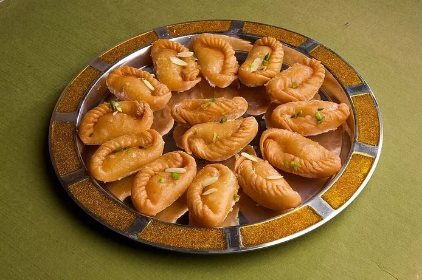

Rajasthan is known for its traditional, colorful art. Dal-Bati-Churma is very popular in Rajasthan. Other famous dishes include bajre ki roti (millet bread) and lahsun ki chutney (hot garlic paste), mawa kachori Mirchi Bada, Pyaaj Kachori and ghevar from Jodhpur, Alwar ka Mawa (milk cake), Kadhi kachori from Ajmer, Malpua from Pushkar, Daal kachori (Kota kachori) from Kota and rassgullas from Bikaner. Originating from the Marwar region of the state is the concept of Marwari Bhojnalaya, or vegetarian restaurants, today found in many parts of India, which offer vegetarian food of the Marwari people.
Rajasthan (Land of Kings and Known as Great Indian Desert)
Some Mouth Watering dishes of Rajasthan

Dal Batti

Gujia